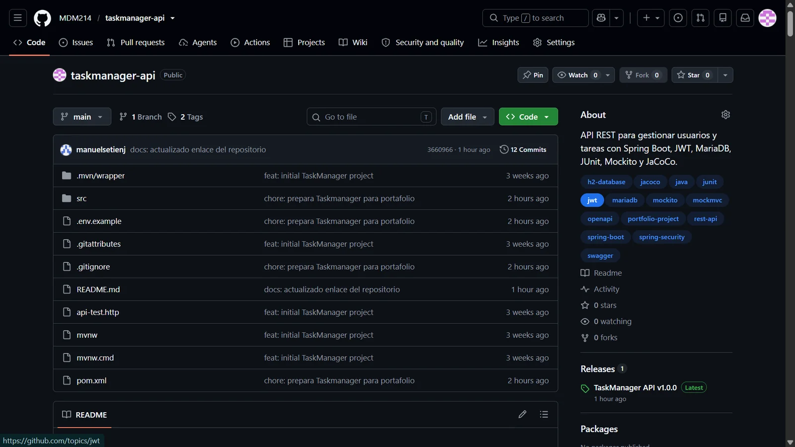
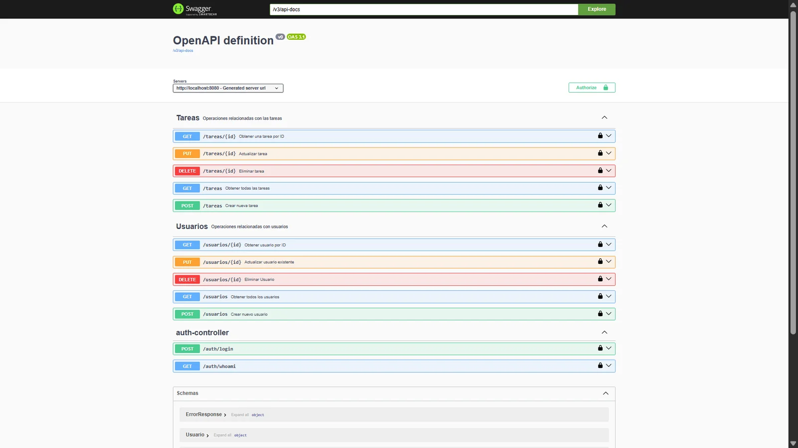
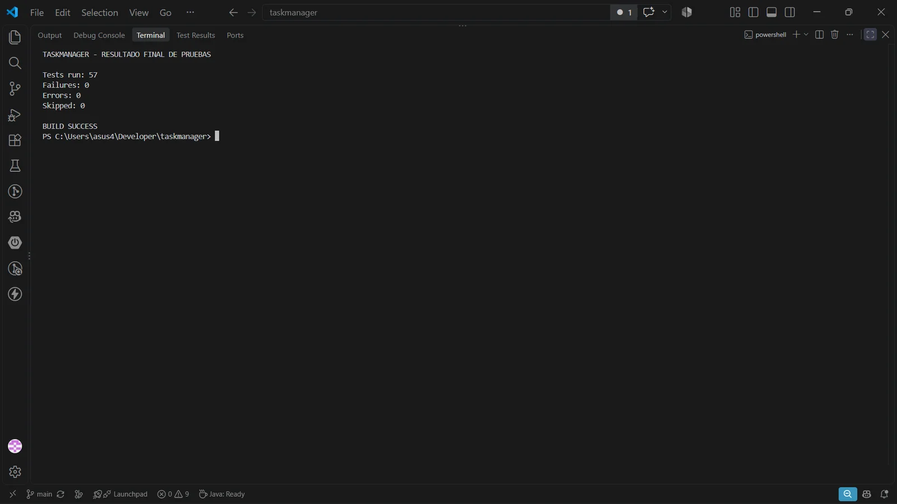
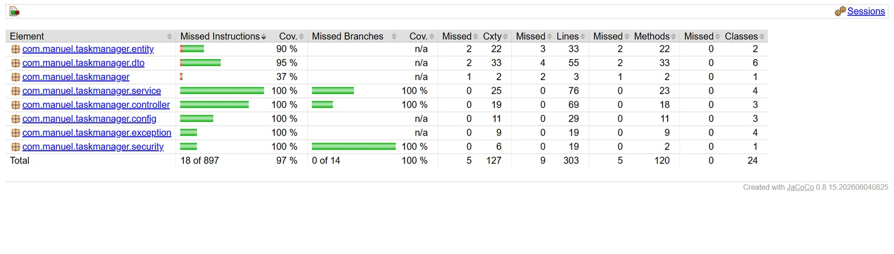
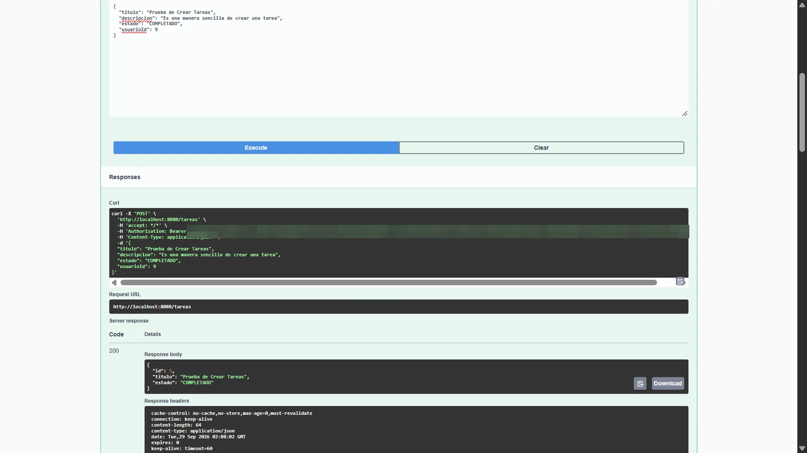
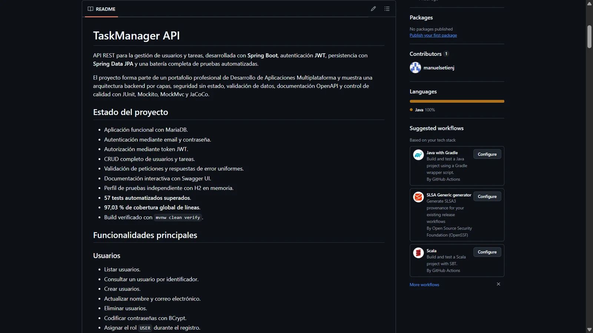

Backend
Java · Spring Boot · Spring Security · API REST · JWT · Maven
Portafolio profesional
Tecnico IT y desarrollador de software
Desarrollo soluciones completas, documentadas y versionadas, desde APIs REST y aplicaciones Android hasta programas Java y proyectos web.
Sevilla, Espana
Estado actual
TaskManager API · Proyecto finalizado
Cliente Android · En desarrollo
Sobre mi
Soy tecnico informatico y desarrollador de aplicaciones multiplataforma, con experiencia en soporte a usuarios, reparacion y montaje de equipos, redes, TPV y asistencia tecnica a empresas.
Tras completar mi formacion en Desarrollo de Aplicaciones Multiplataforma, he orientado mi trayectoria hacia el desarrollo de software, con especial interes en Java, Spring Boot, Android y soluciones web.
Tecnologias
Java · Spring Boot · Spring Security · API REST · JWT · Maven
MariaDB · MySQL · H2 · SQL · Spring Data JPA
Android · Java · Kotlin · JSON · Consumo de APIs
Git · GitHub · JUnit · Mockito · JaCoCo · Swagger
HTML5 · CSS3 · JavaScript · PHP · WordPress
Equipos · Sistemas · Redes · TPV · CCTV · Usuarios
Proyectos

Proyecto 01 · Finalizado
API REST para la gestion de usuarios y tareas con autenticacion JWT, autorizacion, validaciones, MariaDB, OpenAPI y pruebas automatizadas.
Proyecto 02 · En desarrollo
Aplicacion movil conectada a TaskManager API para autenticar usuarios y gestionar tareas.
Proyecto 03 · Proximamente
Aplicacion centrada en POO, organizacion modular y persistencia.
Proyecto 04 · Proximamente
Actualizacion profesional del proyecto web final con identidad visual propia y diseno adaptable.
TaskManager API





Contacto
Consulta mis proyectos o contacta conmigo directamente.